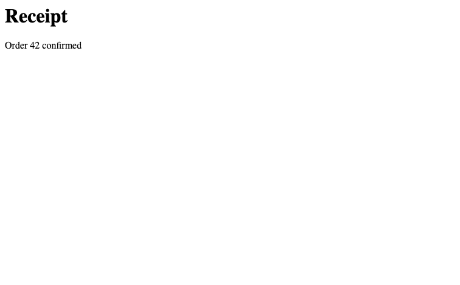

from fastcore.test import *FastCDP API
Source and API details
fastcdp is built from Chrome’s own protocol description: the bundled browser_protocol.json and js_protocol.json list every domain, command, event, and parameter, with descriptions. Loading them once here is what lets the library expose the whole protocol with real signatures and docs, rather than wrapping a hand-picked subset. (The __file__ shuffle covers running this notebook interactively, where nbdev hasn’t set it.)
len(_cdp_domains), [d['domain'] for d in _cdp_domains[:5]](55, ['Accessibility', 'Animation', 'Audits', 'Autofill', 'BackgroundService'])The protocol is large, so discovery is a search problem: cdp_search matches command and event names and descriptions, answering “what’s the CDP command for X?” without leaving the session.
cdp_search('target')[:100]'Audits.checkFormsIssues: Runs the form issues check for the target page. Found issues are reported\nu'cdp_conninfo
def cdp_conninfo(
p:str=None, # Contents of a `DevToolsActivePort` file
d:str | pathlib.Path=None, # Profile dir whose `DevToolsActivePort` to read
):Connection info from contents p, profile dir d, or the default Chrome profile
Chrome (146+) can expose CDP from your everyday browser: enable Allow remote debugging in chrome://inspect/#remote-debugging. Chrome then accepts WebSocket connections on the endpoint recorded in its profile’s DevToolsActivePort file – port on the first line, WebSocket path on the second – and asks you to approve each newly connecting client. CDP.connect() waits up to 60 seconds for this approval. Only that WebSocket endpoint is served (the /json/* HTTP interface belongs to the debug-instance mechanism described later). cdp_conninfo reads the file, and CDP.connect() uses it by default.
On MacOS, the connection info is stored in ~/Library/Application Support/Google/Chrome/DevToolsActivePort (or ~/Library/Application Support/Chromium/DevToolsActivePort for Chromium).
conninfo = cdp_conninfo('9222\n/devtools/browser/demo')
test_eq(conninfo, '9222/devtools/browser/demo')
conninfo'9222/devtools/browser/demo'CDP holds the websocket connection and its routing state. _pending maps command ids to reply futures, and _events maps event names to subscriber queues. Attribute access exposes protocol domains such as cdp.page; dir lists them for discovery.
CDP
def CDP(
wsconn:str=None, # WebSocket URL, populated by connection helpers
debug:bool=False, # Log protocol events
command_timeout:float=10, # Seconds before an unanswered command raises TimeoutError
):Chrome DevTools Protocol connection with event support
connect opens the websocket and starts the read loop and keepalive task. The read loop resolves pending replies by command id and passes events to _dispatch for each subscriber queue. The keepalive task sends a command every 30 seconds while the connection responds.
_dispatch works without a connection. It puts a frame on every queue subscribed to the frame’s method, and drops frames with no subscribers:
c = CDP()
q = asyncio.Queue()
c._events['Page.loadEventFired'] = [q]
c._dispatch(dict(method='Page.loadEventFired', params={}, sessionId='s1'))
c._dispatch(dict(method='Never.subscribed', params={}))
test_eq(q.qsize(), 1)
q.get_nowait()['sessionId']'s1'CDP.connect
async def connect(
p:str=None, # Contents of a `DevToolsActivePort` file, for `cdp_conninfo`
wsconn:str=None, # Websocket URL or port to connect to; from `cdp_conninfo` if None
debug:bool=None, # Print each event as it arrives?
command_timeout:float=10, # Seconds to wait for each protocol command
timeout:int=60, # Seconds to wait for Chrome's connection approval
):Connect to a running Chrome and start the read loop.
Everyday Chrome requires remote debugging enabled at chrome://inspect/#remote-debugging and approval of each new client. Warn the user before connecting. A handshake timeout can mean the approval popup was not answered; ask them to watch for it before retrying. Dedicated debug browsers do not show this popup.
_send assigns a request id and keeps its future in _pending until the reply arrives. __call__ builds the command frame and bounds the wait by command_timeout. Protocol errors raise RuntimeError. A single-value result is unwrapped before returning it.
CDP.__call__
async def __call__(
method:str, sid:str=None, **params
):Call self as a function.
close cancels the read loop, keepalive, and any dialog handler, then closes the websocket. is_open reports the websocket state. Closing a CDP connection disconnects from Chrome but does not quit the browser.
CDP.close
async def close():Disconnect and cancel event tasks; leave the browser and its tabs open
The transport is pluggable. _send (command frame in, reply frame out) and _dispatch (route an event frame to subscribed queues) are the only two methods that touch the websocket protocol flow, so an alternative transport subclasses CDP, overrides _send and the connection lifecycle, and feeds incoming events to _dispatch. Everything else (domain proxies, helpers, event buffers, Page) is inherited unchanged. solvecdp does exactly this, relaying frames through a solveit server to a Chrome extension. Every protocol command is bounded by command_timeout (10 seconds by default), so a lost reply cannot leave a helper waiting forever.
Launching Chrome
The third connection option: start the user’s installed Chrome ourselves, CDP-ready – no manual setup, no approval popups. launch runs it on a separate profile directory (Chrome requires a non-default one for debugging) with an ephemeral debug port, and quit shuts it down again. One launched instance per profile dir: a second launch on the same dir would just signal the running instance and exit.
We launch headless=True here so running this notebook’s tests doesn’t pop up a browser window; drop it when you want to watch.
chrome_bin
def chrome_bin():Path of the installed Chrome/Chromium binary ($FASTCDP_CHROME overrides)
CDP.launch
async def launch(
user_data_dir:str | pathlib.Path=None, # Profile dir; `~/.cache/fastcdp/profile` if None
headless:bool=False, # Run without a visible window?
debug:bool=None, # Print protocol events?
timeout:int=10, # Seconds to wait for the debug endpoint
reuse:bool=True, # Connect to an instance already running on this profile? (Else raise)
chrome:str | pathlib.Path=None, # Explicit executable; otherwise use installed Chrome (`FASTCDP_CHROME` overrides)
):Start or reuse Chrome on a separate profile and connect to it.
The default profile persists across runs. Supply a temporary directory for isolated work. headless applies when starting a browser, not when reusing one. quit stops the browser; close only disconnects.
This notebook uses a temporary headless profile. It does not reuse the default automation profile or the user’s browser. Quit the browser before deleting its profile at the end.
from tempfile import TemporaryDirectoryprofile = TemporaryDirectory(prefix='fastcdp-notebook-')
lcdp = await CDP.launch(user_data_dir=profile.name, headless=True)
lcdp.port49155quit is launch’s counterpart: as well as closing the browser and connection it waits for the process to exit (or the debug port to free), so an immediately following launch on the same profile can’t collide with a half-dead instance.
CDP.quit
async def quit():Quit the browser, wait until it has released its debug port, and close the connection
A second launch on the same profile connects to the running instance instead of failing (reuse=False to make it an error). The reattached handle has no proc, since the process belongs to whoever launched it, and quit works regardless. This is the recovery path when a kernel restart orphans a launched browser.
A quit Chrome leaves DevToolsActivePort behind, so launch trusts the file only after checking its port with is_port_free: a free port proves the file stale, and launch removes it and starts fresh.
rcdp = await CDP.launch(user_data_dir=profile.name, headless=True)
assert rcdp.port == lcdp.port and rcdp.proc is None
await rcdp.close()testing
def testing(
cls:__main__.CDP, headless:bool=False, # Run without a visible window?
version:str=None, # Exact installed Chrome for Testing version; latest installation if None
debug:bool=None, # Print protocol events?
timeout:int=10, # Seconds to wait for the debug endpoint
):Own a fresh Chrome for Testing and temporary profile for the duration of an async with block
testing is a disposable browser session, not another attachment mode. Install its browser explicitly with fastcdp-setup --install stable (--with-deps on Debian/Ubuntu); it never downloads during launch, uses FASTCDP_CHROME, or falls back to your installed Chrome. Omitting headless=True shows the testing browser. Exiting the context closes all its pages, stops its process, and removes its temporary profile, even when the block fails. Neither the CDP Chrome launcher nor its persistent profile is involved.
For a test suite, enter one testing context in the session fixture and share that browser across tests. Individual tests can still create and close their own pages. The executable stays cached for the next run, but cookies and logins do not.
CDP.remote
async def remote(
port:int=9223, # Remote debugging port of the running Chrome
debug:bool=None, # Print each event as it arrives?
):Connect via Chrome remote debugging HTTP endpoint
remote targets the other mechanism: a separate “debug Chrome” started with a remote debugging port. fastcdp-setup creates a “CDP Chrome” launcher for one on remote’s default port 9223 (not 9222, which a main browser with built-in debugging enabled already holds). Since Chrome 136 the debugging switches are ignored for your everyday profile – a debug instance must point --user-data-dir at a non-standard directory, so that scripts can’t reach your real profile’s (differently-encrypted) cookies. To start one by hand on macOS:
'/Applications/Google Chrome.app/Contents/MacOS/Google Chrome' \
--remote-debugging-port=9223 --user-data-dir=$HOME/.cache/fastcdp/cdp-chromeThat instance serves the classic HTTP metadata endpoints, and remote reads webSocketDebuggerUrl from /json/version to connect – no approval prompts, since the profile is disposable.
cdp = await CDP.remote(port=lcdp.port)CDP.pages
async def pages()->__main__.Targets: # Rows with `targetId`, `url`, `title`, `attached`, ...; `*` marks attachedThe browser’s open page targets
Targets
def Targets(
*args, **kwargs
):Page targets as attribute-access rows, one line per target
pages lists the open tabs as attribute-access rows, one line per target with * marking attached ones – the ids it shows are what attach and the Page helpers below take:
await cdp('Target.createTarget', url='https://example.com')'A8C50363D97A15E1EAAD405E4C9876C8'ps = await cdp.pages
pg = first(p for p in ps if 'example.com' in p.url)
pg.title''_find_cmd returns a command’s schema record. _cmd_sig and _cmd_doc below build the Python signature and docstring from it:
cmd = _find_cmd('Page', 'navigate')
test_eq(cmd['name'], 'navigate')
cmd['description']'Navigates current page to the given URL.'Required and optional protocol parameters become keyword-only Python parameters. The session id is an additional optional argument:
sig = _cmd_sig(_find_cmd('Page', 'navigate'))
test_eq(sig.parameters['url'].kind, inspect.Parameter.KEYWORD_ONLY)
test_is(sig.parameters['url'].default, inspect.Parameter.empty)
test_is(sig.parameters['sid'].default, None)
sig<Signature (*, sid=None, url, referrer=None, transitionType=None, frameId=None, referrerPolicy=None)>CDPMethod
def CDPMethod(
cdp, domain, method
):A protocol command as a callable with a generated signature and docs
CDPMethod.__init__ looks up the command’s schema and sets __name__, __doc__, and __signature__ from it. An unknown command raises AttributeError. Construction does not use the connection:
m = CDPMethod(CDP(), 'Page', 'navigate')
assert 'Page.navigate' in m.__doc__
with expect_fail(AttributeError): CDPMethod(CDP(), 'Page', 'nope')
inspect.signature(m)<Signature (*, sid=None, url, referrer=None, transitionType=None, frameId=None, referrerPolicy=None)>CDPDomain
def CDPDomain(
cdp, domain
):A protocol domain; inspect a command object for its signature and return fields
Every protocol domain is an attribute. cdp.page.navigate(url=...) sends Page.navigate. Domain names are case-insensitive; discovery lists Chrome’s canonical names, including DOM and CSS. Unknown domains and commands raise AttributeError.
CDPDomain and CDPMethod are built on demand. Each command carries a keyword-only signature, parameter descriptions, and return-field documentation from the bundled schema. Single-field results are unwrapped to their field value. CDP.__dir__ advertises the domains from _domains, resolved at call time. The attribute hooks stay on the class: exporting them at module level would also make them module attribute hooks.
method = cdp.DOM.focus
assert 'DOM.focus' in method.__doc__
assert 'backendNodeId' in inspect.signature(method).parameters
inspect.signature(method)<Signature (*, sid=None, nodeId=None, backendNodeId=None, objectId=None)>Commands act on a tab through a session: attach starts one for a target and returns its id, which is what every sid argument in the library names. Passing no sid addresses the browser itself.
CDP.attach
async def attach(
tid:str, # Target id, e.g. from `pages`
)->str: # Session id, for `sid` argumentsAttach to target tid
CDP.eval
async def eval(
expr:str, # JS expression; a promise result is awaited
sid:str=None, # Session to evaluate in
):Evaluate expr in the page, raising on a JS exception
eval is the workhorse read primitive: evaluate a JS expression in the page, awaiting promises and returning by value. A JS exception surfaces as a Python RuntimeError rather than a result field to check, so a broken expression fails a test at the call site.
tid = pg.targetId
sid = await cdp.attach(tid)
await cdp.eval('document.title', sid)''CDP.wait_event
async def wait_event(
event:str, timeout:int=10
):The next event frame, within timeout seconds
on
def on(
*events:str
):Subscribe to events for the scope of the block, yielding the queue their frames arrive on
Event handling is subscribe-then-act: on registers a fresh queue for some events for the scope of a block, and every matching frame lands in it. The pattern matters because CDP pushes events as they happen – a frame that fired before the queue existed is simply gone, which is why the navigation helpers below always subscribe before triggering anything.
t = await cdp.target.createTarget(url='about:blank')
sid = await cdp.attach(t)
await cdp.page.enable(sid=sid)
async with cdp.on('Page.loadEventFired') as q:
await cdp.page.navigate(sid=sid, url='https://example.com')
event = await asyncio.wait_for(q.get(), 5)
test_eq(event['sessionId'], sid)
event['method']'Page.loadEventFired'CDP.wait_defined
async def wait_defined(
name:str, sid:str=None, timeout:int=10
):Wait until the global name exists and is truthy
CDP.wait_for_selector
async def wait_for_selector(
sel:str, # CSS selector to watch
present:bool=True, # Wait for a match to appear (True) or for none to remain (False)
sid:str=None, # Session to wait in
timeout:int=10, # Seconds to wait before raising
):Wait for CSS selector sel to match an element (with present=False, to match none)
CDP.wait_for
async def wait_for(
expr:str, sid:str=None, timeout:int=10
):Wait for JS expression to be truthy, return its value
The polling waits are all fastcore’s wait_until with a different probe. wait_for polls a JS expression and returns its (truthy) value, and wait_for_selector and wait_defined phrase common conditions as expressions. When no wait_for_* fits, write a probe and call wait_until directly.
title = await cdp.wait_for('document.title', sid=sid)
test_eq(title, 'Example Domain')
title'Example Domain'await cdp.target.closeTarget(targetId=t)TruePageDomain binds a protocol domain to one session. fastcore’s splice_sig carries each wrapped callable’s name, docstring, and signature across, minus the sid parameter.
bound = PageDomain(sid, cdp.DOM).focus
assert 'sid' not in inspect.signature(bound).parameters
assert 'backendNodeId' in inspect.signature(bound).parameters
inspect.signature(bound)<Signature (*, nodeId=None, backendNodeId=None, objectId=None)>Page bundles a connection, a target, and its session. It forwards session helpers with sid filled in and wraps protocol domains in PageDomain. Connection-wide operations, such as opening another tab, remain on page.cdp. Page.new also enables focus emulation: a driven page renders and takes input as if focused even when its tab or window is hidden.
Page
def Page(
cdp:__main__.CDP, t:str, sid:str, owned:bool=False, frame_id:str=None
):A tab and its session; session helpers bind sid, and connection operations live on page.cdp
Discovery uses the object that will receive the call. A Page advertises session helpers and protocol domains, not connection-only operations. Reading its docs does not evaluate properties or contact Chrome.
from pyskills import doc, xdirunconnected = CDP()
scoped = Page(unconnected, 'target', 'session')
assert 'new_page' not in xdir(scoped)
assert 'pages' not in xdir(scoped)
assert 'eval' in xdir(scoped)
assert 'sid' not in inspect.signature(scoped.eval).parameters
assert 'DOM.focus' in doc(scoped.DOM.focus)
with ExceptionExpected(AttributeError): scoped.new_page
with ExceptionExpected(AttributeError): scoped.DOM.not_a_command
doc(scoped.DOM.focus)async def DOM.focus(
*, nodeId:NoneType=None, backendNodeId:NoneType=None, objectId:NoneType=None
):"""DOM.focus - Focuses the given element.
nodeId (optional): Identifier of the node.
backendNodeId (optional): Identifier of the backend node.
objectId (optional): JavaScript object id of the node wrapper.
Returns the field value for a single-field result, otherwise the result dict."""close closes the tab. It closes the connection only when the page owns it. is_open reports the shared connection:
Page.is_open
def is_open():Whether the shared connection is open, not whether this tab still exists
Page.close
async def close():Close this tab, including an attached existing tab; close the connection only when owned
Page.new
async def new(
t:str=None, # Target id of an existing tab; a new blank tab if None
cdp:__main__.CDP=None, # Connection to use; a new one from `CDP.connect(**kwargs)` if None, closed with the page
sid:str=None, # Session already attached to `t`; attached here if None
*, p:str=None, # Contents of a `DevToolsActivePort` file, for `cdp_conninfo`
wsconn:str=None, # Websocket URL or port to connect to; from `cdp_conninfo` if None
debug:bool=None, # Print each event as it arrives?
command_timeout:float=10, # Seconds to wait for each protocol command
timeout:int=60, # Seconds to wait for Chrome's connection approval
):A Page for tab t, on connection cdp
Page.new with cdp= shares an existing connection. close then closes only the tab:
tab = await Page.new(cdp=cdp)
await tab.close()
assert cdp.is_openCDP.remote_page
async def remote_page(
port:int=9223, # Remote debugging port of the running Chrome
debug:bool=None, # Print each event as it arrives?
):Connect via remote debugging and return a Page for the active tab
CDP.active_page
async def active_page():A Page driving the focused attachable tab, or None when none has focus; a hidden tab never qualifies, since focus emulation makes hasFocus() lie
active_page attaches to the focused tab on an existing connection. remote_page connects to a debug Chrome first, then drives its focused tab.
page = await CDP.remote_page(port=lcdp.port)
await page.eval('document.title')'Example Domain'new_page opens a tab on the existing connection. Closing that tab leaves the shared connection open:
CDP.new_page
async def new_page(
background:bool=False, # Open the tab without focusing it, so the browser window is not raised
):Create a new tab, return Page
page = await cdp.new_page()
await page.page.navigate(url='https://httpbingo.org/forms/post')
await page.wait_for_selector('form')Truepage.is_openTrueAfter closing the tab, page.is_open still reports the shared connection’s state:
await page.close()
page.is_openTrueUse async with for a temporary tab. Exiting calls Page.close, even if the block raises. The shared connection stays open. Only scope tabs you intend to close.
async with await cdp.new_page(background=True) as preview: await preview.page.navigate(url='https://example.com')
assert cdp.is_openCDP.attach_page
async def attach_page(
tid:str, # Target id, e.g. from `pages`
)->__main__.Page: # Proxy driving that tabAttach to the existing tab tid
attach_page is new_page’s counterpart for a tab that already exists: the same Page proxy, bound to the target you name.
page = await cdp.attach_page(pg.targetId)
await page.eval('document.title')'Example Domain'_event_wait reads frames from a queue until one matches both the session filter and the predicate. One deadline covers the whole wait. The predicate here is fastcore’s noop, which returns its argument and therefore accepts every frame:
q = asyncio.Queue()
for s in ('other', 's1'): q.put_nowait(dict(sessionId=s, params={}))
m = await _event_wait(q, 's1', asyncio.get_event_loop().time()+1, noop, 'demo')
test_eq(m['sessionId'], 's1')
m{'sessionId': 's1', 'params': {}}The private wait machinery shares one deadline across phases and filters every event by the page’s session. Network-idle tracking only starts before an operation, when it can observe each request opening; there is deliberately no post-hoc idle helper that could miss work already in flight. With no traffic on the queue, _idle_wait returns after idle_ms. An unclosed request makes it run to its deadline, and the TimeoutError reports the in-flight count:
q = asyncio.Queue()
await cdp._idle_wait(q, None, asyncio.get_event_loop().time()+1, 50)
q.put_nowait(dict(method='Network.requestWillBeSent', params=dict(requestId='r1', request=dict(url='https://x/'))))
with expect_fail(TimeoutError, contains='1 requests in flight'): await cdp._idle_wait(q, None, asyncio.get_event_loop().time()+0.3, 50)CDP.goto
async def goto(
url:str, # URL to navigate to
sid:str=None, # Session to navigate
wait:str | None='load', # 'load' (default), 'idle', or None
timeout:float=10, # Maximum seconds for navigation and the requested wait
idle_ms:int=100, # Quiet time after load when `wait='idle'`
):Navigate to url, perform the requested wait, and raise on a navigation error.
load waits for document load; idle also waits for initial network activity to settle. Neither guarantees application-specific readiness. Use a content wait for in-place UI updates. wait=None skips navigation waiting.
Navigation waiting is explicit. goto defaults to wait='load', the useful baseline: Chrome has accepted the navigation and the new document has fired load. Use wait='idle' only when the page’s initial requests must also settle, or wait=None when the caller will wait for a more meaningful condition such as text or an accessibility node. timeout is one deadline for the navigation and requested wait, rather than a fresh allowance for each phase.
expect_navigation is the action form. It subscribes before the wrapped action, requires that the page’s top frame actually navigates (including same-document history/hash changes), and then applies the same wait mode. This is intentionally not a post-hoc readiness call: after an action returns there is no reliable way to reconstruct a request or navigation event that has already happened.
For wait='idle', requestWillBeSent opens an in-flight request and loadingFinished/loadingFailed closes it. The wait ends once none remain and the page’s HTTP and websocket traffic has been quiet for idle_ms. blob: loads are not counted, and WebSocket/EventSource connections stay open by design, so those connections are excluded while their frames still reset the quiet period. Events from other attached tabs are ignored.
page = await Page.new(cdp=cdp)
await page.goto('https://httpbingo.org/forms/post', wait='idle')Chrome reports a refused navigation in the command result (errorText) rather than as a protocol error, so goto checks for it and raises at once — the alternative is waiting out a load event that can never come. One notable refusal: transports that attach via chrome.debugger (the extension path) get renderer-initiated semantics, where top-frame data: URLs are banned. For “this HTML, in this page” — test fixtures, generated reports — set_content writes the document directly, no navigation involved.
with ExceptionExpected(RuntimeError, 'ERR_NAME_NOT_RESOLVED'): await page.goto('https://nonexistent.invalid/')CDP.set_content
async def set_content(
html:str, sid:str=None
):Replace the document with html through Page.setDocumentContent, without navigation.
Use this for fixture HTML on extension connections. Navigating to a data: URL through the extension fails with net::ERR_ABORTED.
set_content replaces the current document without navigating. Read the new heading from the same page:
await page.set_content('<h1>Receipt</h1><p>Order 42 confirmed</p>')
test_eq(await page.eval('document.querySelector("h1").innerText'), 'Receipt')screenshot returns an IPython Image, so in a notebook the capture displays inline; full=True captures the whole scrollable page rather than the viewport.
CDP.screenshot
async def screenshot(
sid:str=None, full:bool=False
):Screenshot of the viewport, or the whole scrollable page if full
A short pause before capturing gives the compositor time to paint the freshly set content:
await asyncio.sleep(0.2)
img = await page.screenshot()
img
Close the screenshot tab and its connection before starting the accessibility examples:
await page.close()
await cdp.close()LLMs and accessibility
cdp = await CDP.remote(port=lcdp.port)page = await cdp.new_page()
await page.goto('https://httpbingo.org/forms/post')
await page.eval('document.title')''What the protocol gives back is a flat list of nodes – hundreds for even a small form, most of them unnamed wrappers and layout artifacts. Here is the raw material:
await page.accessibility.enable()
tree = await page.accessibility.getFullAXTree()
len(tree)90tree[0]{'nodeId': '16',
'ignored': False,
'role': {'type': 'internalRole', 'value': 'RootWebArea'},
'chromeRole': {'type': 'internalRole', 'value': 144},
'name': {'type': 'computedString',
'value': '',
'sources': [{'type': 'relatedElement', 'attribute': 'aria-labelledby'},
{'type': 'attribute', 'attribute': 'aria-label'},
{'type': 'attribute', 'attribute': 'aria-label', 'superseded': True},
{'type': 'relatedElement', 'nativeSource': 'title'}]},
'properties': [{'name': 'focusable',
'value': {'type': 'booleanOrUndefined', 'value': True}},
{'name': 'focused', 'value': {'type': 'booleanOrUndefined', 'value': True}},
{'name': 'url',
'value': {'type': 'string', 'value': 'https://httpbingo.org/forms/post'}}],
'childIds': ['17'],
'backendDOMNodeId': 16,
'frameId': 'CEA2DBFD67092B5179FE6C6C38272AD5'}await page.close()AXNode is the tree form of one node, and its repr is the point: markdown bullet lines, one per node, showing role, name, the properties that are actually set, and the backend id that click and friends take. This section is called “LLMs and accessibility” because that rendering is the page summary an LLM driving the browser reads – compact, semantic, and carrying the interaction handles inline.
node = AXNode(tree[0])
test_eq(node.role, 'RootWebArea')
assert node.props['focusable']
node- RootWebArea “”
focusable=Truefocused=Trueurl=https://httpbingo.org/forms/post[#16]
_simplify removes an unnamed generic wrapper and puts its children in its place:
leaf = AXNode(dict(role=dict(value='button'), name=dict(value='Pay'), backendDOMNodeId=42))
wrap = AXNode(dict(role=dict(value='generic')))
wrap.children = [leaf]
res = _simplify(wrap)
test_eq(res, [leaf])
res[- **button** "Pay" [#42]]build_ax_tree
def build_ax_tree(
nodes:list
):Build AXNode tree from flat CDP accessibility node list
build_ax_tree links the flat list into a tree and then _simplify prunes it: an unnamed none/generic/paragraph node teaches nothing, so its children splice up into its place. That one rule removes most of the raw dump’s bulk without losing a control or a label, and _set_parents then wires the parent links that up and path walk.
root = build_ax_tree(tree)
assert root.children and all(c.parent is root for c in root.children)
[(c.role, c.parent.role) for c in root.children][('form', 'RootWebArea')]CDP.ax_tree
async def ax_tree(
sid:str=None, # Session to read
frame_id:str=None, # Frame to read; the session's main frame if None
):Get an AXTree for a session or one of its frames.
Display the tree or use grep to locate content, up and view to read its surroundings, and find_id to address a control. These tree operations are synchronous. Node ids are DOM backend ids, not front-end nodeIds.
ax_tree is the one-call read – enable, fetch, build, simplify – and the usual way in:
page = await cdp.new_page()
await page.goto('https://httpbingo.org/forms/post')root = await page.ax_tree()
root- RootWebArea “”
focusable=Truefocused=Trueurl=https://httpbingo.org/forms/post[#16]- form “” [#2]
- LabelText “” [#21]
- StaticText “Customer name:” [#64]
- InlineTextBox “Customer name:”
- textbox “Customer name:”
focusable=Trueeditable=plaintextsettable=True[#3]
- StaticText “Customer name:” [#64]
- LabelText “” [#24]
- StaticText “Telephone:” [#65]
- InlineTextBox “Telephone:”
- textbox “Telephone:”
focusable=Trueeditable=plaintextsettable=True[#4]
- StaticText “Telephone:” [#65]
- LabelText “” [#27]
- StaticText “E-mail address:” [#66]
- InlineTextBox “E-mail address:”
- textbox “E-mail address:”
focusable=Trueeditable=plaintextsettable=True[#5]
- StaticText “E-mail address:” [#66]
- group “Pizza Size” [#29]
- Legend “” [#30]
- StaticText “Pizza Size” [#67]
- InlineTextBox “Pizza Size”
- StaticText “Pizza Size” [#67]
- radio ” Small”
focusable=True[#7] - radio ” Medium”
focusable=True[#8] - radio ” Large”
focusable=True[#9]
- Legend “” [#30]
- group “Pizza Toppings” [#37]
- Legend “” [#38]
- StaticText “Pizza Toppings” [#71]
- InlineTextBox “Pizza Toppings”
- StaticText “Pizza Toppings” [#71]
- checkbox ” Bacon”
focusable=True[#10] - checkbox ” Extra Cheese”
focusable=True[#11] - checkbox ” Onion”
focusable=True[#12] - checkbox ” Mushroom”
focusable=True[#13]
- Legend “” [#38]
- LabelText “” [#48]
- StaticText “Preferred delivery time:” [#76]
- InlineTextBox “Preferred delivery time:”
- InputTime “Preferred delivery time:”
focusable=Truesettable=True[#14]- spinbutton “Hours Hours”
focusable=Truesettable=Truevaluemin=1valuemax=12[#52]- StaticText “–” [#77]
- InlineTextBox “–”
- StaticText “–” [#77]
- StaticText “:” [#78]
- InlineTextBox “:”
- spinbutton “Minutes Minutes”
focusable=Truesettable=Truevaluemax=59[#54]- StaticText “–” [#79]
- InlineTextBox “–”
- StaticText “–” [#79]
- StaticText ” ” [#80]
- InlineTextBox ” ”
- spinbutton “AM/PM AM/PM”
focusable=Truesettable=Truevaluemin=1valuemax=2[#56]- StaticText “–” [#81]
- InlineTextBox “–”
- StaticText “–” [#81]
- button “Show time picker Show time picker”
focusable=TruehasPopup=menu[#57]
- spinbutton “Hours Hours”
- StaticText “Preferred delivery time:” [#76]
- LabelText “” [#59]
- StaticText “Delivery instructions:” [#82]
- InlineTextBox “Delivery instructions:”
- textbox “Delivery instructions:”
focusable=Trueeditable=plaintextsettable=Truemultiline=True[#6]
- StaticText “Delivery instructions:” [#82]
- button “Submit order”
focusable=True[#63]- StaticText “Submit order” [#83]
- InlineTextBox “Submit order”
- StaticText “Submit order” [#83]
- LabelText “” [#21]
- form “” [#2]
AXNode.find_all
def find_all(
role:str=None, # Accessibility role to match exactly, e.g. 'button'
name:str=None, # Substring of the accessible name to match
):Find all descendants matching role and/or name substring
AXNode.find_id
def find_id(
role:str=None, # Accessibility role to match exactly, e.g. 'button'
name:str=None, # Substring of the accessible name to match
)->int: # The backend node id, for `click`, `fill_text` and friends; None if no matchFind first descendant matching role and/or name substring, and return its backend id
AXNode.find
def find(
role:str=None, # Accessibility role to match exactly, e.g. 'button'
name:str=None, # Substring of the accessible name to match
):Find first descendant matching role and/or name substring
find and find_id target a control by its role and accessible name. find returns the node; find_id returns its backend id for interaction. find_all returns every matching node.
nmid = root.find_id('textbox', 'Customer name')
phid = root.find_id('textbox', 'Telephone')
nmid3On an unfamiliar page, first locate the content with grep, then read its surroundings with up and view. up climbs from a leaf to its enclosing widget. path names the ancestors from the root to the node’s parent.
A hit is often a leaf inside the widget that matters: up climbs to it, and path names where in the page a node sits.
cheese = root.find('checkbox', 'Extra')
assert (cheese.role, cheese.up().role) == ('checkbox', 'group')
cheese.path()'RootWebArea > form > group "Pizza Toppings"'AXNode.view
def view(
depth:int=None
)->__main__.AXView:Markdown subtree rooted here, to depth levels (None = unbounded)
cheese.up().view(1) shows the control’s group and its immediate children without the rest of the form. AXView displays the subtree as markdown:
toppings = cheese.up().view(1)
assert cheese.name in toppings
toppings- group “Pizza Toppings” [#37]
- Legend “” [#38] …
- checkbox ” Bacon”
focusable=True[#10] - checkbox ” Extra Cheese”
focusable=True[#11] - checkbox ” Onion”
focusable=True[#12] - checkbox ” Mushroom”
focusable=True[#13]
AXNode.grep
def grep(
pattern:str='', # Regex over node names
role:str=None, # Only nodes with this accessibility role, when given
ignore_case:bool=True, # Case-insensitive match?
max_results:int=20, # Stop after this many hits
)->__main__.AXMatches:Regex-search descendant names, for orientation: hits carry ids and ancestor paths
AXMatches
def AXMatches(
*args, **kwargs
):grep hits, one line per node: id, role, name, ancestor path
grep regex-searches node names and returns AXMatches: one line per hit with its id and ancestor path. The id can be passed to click or fill_text. InlineTextBox nodes are skipped because they duplicate their parent’s text.
root.grep('pizza')#29 group "Pizza Size" — RootWebArea > form
#67 StaticText "Pizza Size" — RootWebArea > form > group "Pizza Size" > Legend
#37 group "Pizza Toppings" — RootWebArea > form
#71 StaticText "Pizza Toppings" — RootWebArea > form > group "Pizza Toppings" > Legendrole= narrows a text match that lands on several node kinds, and view with a depth reads a hit’s neighborhood without dumping its whole subtree — elided levels end in …:
sz = root.grep('pizza size', role='group')[0]
assert sz.role == 'group'
sz.view(1)- group “Pizza Size” [#29]
- Legend “” [#30] …
- radio ” Small”
focusable=True[#7] - radio ” Medium”
focusable=True[#8] - radio ” Large”
focusable=True[#9]
CDP.sel_backend_id
async def sel_backend_id(
sel:str, sid:str=None
)->int:Backend node id of the first element matching CSS selector sel, for click and friends
CDP.sel_node
async def sel_node(
sel:str, sid:str=None
)->int:DOM nodeId of the first element matching CSS selector sel
The ax tree and the DOM use different id spaces. Ax nodes carry backend ids, which click, tap, and fill_text accept. The DOM/CSS domains also use front-end nodeIds. sel_node resolves a CSS selector to a nodeId; sel_backend_id resolves it to a backend id.
front_id = await page.sel_node('[name=custname]')
test_eq(await page.sel_backend_id('[name=custname]'), nmid)
front_id, nmid(19, 3)CDP.matched_styles
async def matched_styles(
target:str | int, sid:str=None
)->__main__.MatchedStyles:Matching CSS rules for a selector or an ax backend node id, with each rule’s origin
MatchedStyles
def MatchedStyles(
*args, **kwargs
):Matched rules in cascade order (winners last); each row has origin, selector, css, and the protocol record in raw
matched_styles explains why an element looks the way it does. It returns matching rules in cascade order, with each rule’s origin. It accepts a selector or an ax backend id, including a grep or find_id result.
ms = await page.matched_styles('form')
assert ms and all(r.origin for r in ms)
ms[user-agent] form
[user-agent] address, blockquote, center, div, figur… await page.matched_styles(root.find_id('button', 'Submit order'))[user-agent] button
[user-agent] input, textarea, select, button
[user-agent] input[type="button" i], input[type="sub…
[user-agent] input[type="button" i], input[type="sub… CDP.attrs
async def attrs(
target:str | int, sid:str=None
)->dict:All HTML attributes as a dict, from a CSS selector’s first match or an ax backend node id
attrs reads all HTML attributes as a dictionary. Like matched_styles, it accepts a CSS selector or an ax backend id. The customer-name field found above can be inspected without constructing a selector:
field_attrs = await page.attrs(nmid)
test_eq(field_attrs, await page.attrs('[name=custname]'))
field_attrs{'name': 'custname'}CDP.js_node_run
async def js_node_run(
code:str, # JS statements, with the node as `this`
backendNodeId:int, # Node, e.g. from `AXNode.find_id`
sid:str=None, # Session the node lives in
):Run code with a DOM node as this
CDP.js_node
async def js_node(
fn:str, # JS function declaration, called with the node as `this`
backendNodeId:int, # Node, e.g. from `AXNode.find_id`
sid:str=None, # Session the node lives in
):Call function fn on a DOM node, returning the protocol result
Sometimes no protocol command does the job and the answer is JS on one node. js_node crosses the id gap – resolve a backend node id to a live object, then call a function with it as this – and js_node_run wraps plain statements in that function. Several helpers below are one js_node_run each.
await page.js_node_run('this.value = "18:30"', root.find_id('InputTime', 'delivery time')){'type': 'undefined'}CDP.scroll_to
async def scroll_to(
backendNodeId:int, # Node, e.g. from `AXNode.find_id`
sid:str=None, # Session the node lives in
):Scroll a node to the center of the viewport, and wait for the frame that composites the scroll
Pointer events address viewport coordinates, so interaction starts with geometry: _node_center reads the center of a node’s content box, and _scroll_center scrolls the node to the viewport center first, which is the pair every pointer verb needs – an off-screen target would otherwise receive events at coordinates outside the window. scroll_to is also useful on its own, e.g. to bring a node on-screen before a viewport screenshot.
scroll_to returns only after two animation frames. The scroll moves the layout at once, but the compositor’s hit-test data, which routes pointer events between the page and any frames it isolates, follows on the next composited frame. Pressing before that frame lands the event on whatever the stale data placed at those coordinates: a Stripe card frame a scroll away from the button, say, so the button sees only the release.
click and hover accept a CSS selector or backend node id. Both use _hover_center to scroll, move the mouse, and re-read the center because hover-gated UI can change the box. If preparation fails and the selector now matches a different node, preparation restarts on that node. Errors for unchanged nodes or explicit ids propagate. Mouse press and release are never retried. _bounded limits the whole action and names it in a timeout error.
CDP.click
async def click(
target:str | int, # CSS selector or backend node id, e.g. from `AXNode.find_id`
sid:str=None, # Session the node lives in
timeout:float=5, # Maximum seconds for the whole click
):Click with real mouse movement, hover, press and release; inspect the page before retrying a timeout
CDP.hover
async def hover(
target:str | int, # CSS selector or backend node id, e.g. from `AXNode.find_id`
sid:str=None, # Session the node lives in
timeout:float=5, # Maximum seconds for the whole hover
):Scroll a node into view and move the mouse to its center, firing its hover events and CSS :hover
A click on the Medium radio checks it. A fresh tree confirms the state:
await page.click(root.find_id('radio', 'Medium'))
test_eq((await page.ax_tree()).find('radio', 'Medium').props['checked'], 'true')CDP.ax_click
async def ax_click(
role:str=None, # Accessibility role to match exactly
name:str=None, # Case-sensitive substring of the accessible name
sid:str=None, # Session containing the target
frame_id:str=None, # Frame to read; the session's main frame if None
timeout:float=5, # Maximum seconds for the click
):Find the first matching node in a fresh accessibility tree and click it
ax_click combines a fresh accessibility lookup with click. It uses find’s first-match rules and raises ValueError when no node matches. Wait explicitly for controls that arrive asynchronously. Reuse an inspected tree’s backend IDs when several actions use that same tree.
await page.DOM.focus(backendNodeId=nmid)
await page.input.insertText(text='Jeremy Howard')
await page.DOM.focus(backendNodeId=phid)
await page.input.insertText(text='555-1234'){}CDP.dom_click
async def dom_click(
backendNodeId:int, # Node, e.g. from `AXNode.find_id`
sid:str=None, # Session the node lives in
timeout:float=5, # Maximum seconds to wait
):Activate with the node’s JavaScript click() (untrusted input); inspect the page before retrying a timeout
CDP.tap
async def tap(
backendNodeId:int, # Node, e.g. from `AXNode.find_id`
sid:str=None, # Session the node lives in
timeout:float=5, # Maximum seconds for the whole tap
):Activate with a trusted tap without mouse hover; inspect the page before retrying a timeout
tap sends Chrome’s trusted tap gesture without moving the mouse, for controls where hover handling is unwanted or unreliable. dom_click calls the element’s JavaScript activation and does not produce trusted user input.
Choose Large and tap Extra Cheese. A fresh tree shows the selected controls:
await page.ax_click('radio', 'Large')
test_eq((await page.ax_tree()).find('radio', 'Large').props['checked'], 'true')
await page.tap(cheese.backend_id)
cheese = (await page.ax_tree()).find('checkbox', 'Extra Cheese')
test_eq(cheese.props['checked'], 'true')
cheese- checkbox ” Extra Cheese”
focusable=Truefocused=Truechecked=true[#11]
CDP.fill_text
async def fill_text(
backendNodeId:int, # The text control, e.g. from `AXNode.find_id`
text:str, # Text to type into it
sid:str=None, # Session the node lives in
):Focus and select a text control, then replace its contents with native text insertion, without key events
fill_text replaces a text control’s contents without firing key events:
await page.fill_text(root.find_id('textbox', 'Delivery'), 'Ring the doorbell twice')CDP.type
async def type(
text:str, # Characters to press, one key event pair each. Line breaks press Enter
sid:str=None, # Session to send to
):Press each character of text as key events at the current focus.
LF, CRLF, and CR line breaks press Enter, which can submit a form or trigger a shortcut. Use fill_text to replace a control’s contents without key events.
CDP.press
async def press(
key:str, # A single character, or a key name from `_keys` such as 'Enter'
sid:str=None, # Session to send to
ctrl:bool=False, # Hold Control
shift:bool=False, # Hold Shift
alt:bool=False, # Hold Alt/Option
meta:bool=False, # Hold Meta/Command
mod:bool=False, # Hold the platform primary modifier: Command on macOS, Control elsewhere
):Send one key press, with modifiers, as real keydown/keyup events
Keyboard shortcuts and key-driven UI need the events themselves. press sends one real keydown/keyup pair with modifiers carried on the events, and type presses each character of a string. mod=True holds the platform primary modifier, resolved on the machine running Python: Command on macOS, Control elsewhere.
App-level keydown listeners see every chord. The browser’s own editing behavior does not: a synthetic Cmd+A selects nothing. With Meta held, press therefore also issues the matching editing command for a, c, x, v, z, and y.
did = root.find_id('textbox', 'Delivery')
await page.DOM.focus(backendNodeId=did)
await page.press('a', mod=True)
await page.type('Leave at door\nRing twice')
await page.press('Backspace')
val = await page.eval('document.querySelector("textarea").value')
test_eq(val, 'Leave at door\nRing twic')
val'Leave at door\nRing twic'CDP.click_and_wait
async def click_and_wait(
backendNodeId:int, # The element to click, e.g. from `AXNode.find_id`
sid:str=None, # Session the node lives in
*, wait:str | None='load', # 'load', 'idle', or None to stop after navigation begins
timeout:float=10, # Maximum seconds for the action and requested wait
idle_ms:int=100, # Quiet time after load when `wait='idle'`
):Click with real pointer events and wait for its navigation
expect_navigation is for actions such as clicks: it subscribes first and then requires a top-frame navigation, including history and hash changes. goto already owns the navigation command, so it can use Chrome’s returned loaderId directly and does not need to infer that a navigation began.
A form submission combines two independent choices: how to activate the control, and what completion means. click_and_wait is the convenient common case — mouse input followed by a required navigation. Compose tap or dom_click with expect_navigation explicitly when either is the reliable activation path for a particular control.
await page.eval("sessionStorage.removeItem('fastcdpPointer'); document.querySelector('form').addEventListener('mousedown', () => sessionStorage.fastcdpPointer = '1', {once:true})")
await page.click_and_wait(root.find_id('button', 'Submit order'))
test_eq(await page.eval("sessionStorage.fastcdpPointer"), '1')click_and_wait is the common mouse-click-plus-navigation operation; the assertion above confirms the real mousedown reached the form. For another activation path, compose the primitives explicitly: async with page.expect_navigation(): await page.tap(node_id). Both forms require a top-frame navigation, so they fail clearly when activation did nothing rather than mistaking the old document’s already-complete state for success.
When activation swaps content in place (tab panels, htmx, SPAs), there is no navigation to expect and the tree in hand goes stale. Use ordinary click, tap, or dom_click, then wait for the application result. wait_for_ax polls until a node matching role/name (as in find) exists and returns the fresh tree — the wait and the re-read are one call.
CDP.wait_for_ax
async def wait_for_ax(
role:str=None, # Accessibility role to match exactly, as in `find`
name:str=None, # Substring of the accessible name to match, as in `find`
pred:<built-in function callable>=None, # Extra test a matching node must pass, e.g. `lambda n: not n.props.get('disabled')`
sid:str=None, # Session to wait in
frame_id:str=None, # Frame to read; the session's main frame if None
timeout:int=10, # Seconds to wait before raising
):Poll ax_tree until a node matches role/name (as in find) and pred; returns the fresh tree
await page.eval(r'setTimeout(() => { const h = document.createElement("h2"); h.textContent = "Order received"; document.body.append(h) }, 300)')
fresh = await page.wait_for_ax('heading', 'Order received')
fresh.find('heading', 'Order received').name'Order received'A node can be present before it is usable. Google Cloud Console’s support-email picker, for one, reports disabled in the accessibility tree while it loads, with no DOM attribute to select on. pred adds a test the matching node must pass, so the wait ends when the node is in the state the next action needs, not merely when it exists.
await page.eval(r'const b = document.createElement("button"); b.textContent = "Pay"; b.disabled = true; document.body.append(b); setTimeout(() => b.disabled = false, 300)')
fresh = await page.wait_for_ax('button', 'Pay', pred=lambda n: not n.props.get('disabled'))
fresh.find('button', 'Pay').props{'invalid': 'false', 'focusable': True}CDP.wait_for_new_page
async def wait_for_new_page(
existing, # Page target rows or target IDs captured before the opening action
timeout:float=10, # Seconds to wait before raising
opener:str=None, # Target ID of the page opening the new tab (page.t); None accepts any new page
):Wait for a page absent from existing, attach it, and return its Page
Clicking Receipt below opens another tab. Capture cdp.pages before clicking, then pass that list to wait_for_new_page. It finds the new tab even if the tab opened before the wait began.
await page.goto('about:blank')
await page.set_content('<a href="about:blank" target="_blank" rel="opener">Receipt</a>')known = await cdp.pages
await page.ax_click('link', 'Receipt')
async with await cdp.wait_for_new_page(known) as receipt: test_eq(await receipt.eval('location.href'), 'about:blank')Someone else could open a tab between taking the list and clicking Receipt. Pass opener=page.t to find the tab opened from this page. Here page.t is the original page’s Chrome target ID. Without Chrome’s opener relationship, the filtered wait times out.
Open an unrelated tab in that interval to show that it is ignored:
known = await cdp.pages
async with await cdp.new_page(background=True) as unrelated:
await page.ax_click('link', 'Receipt')
async with await cdp.wait_for_new_page(known, opener=page.t) as receipt: assert receipt.t != unrelated.tDebugging
Helpers for debugging apps: buffered console and network history, auto-handled dialogs, and a few conveniences. CDP only delivers events once the relevant domain is enabled, so each start_* helper enables it and buffers from that moment on.
_EvtBuf subscribes to _events, like on. It accumulates matching frames across reads. drain(sid) returns one session’s frames and keeps the rest:
c = CDP()
buf = _EvtBuf(c, 'Demo.evt')
for s in ('s1', 's2'): c._dispatch(dict(method='Demo.evt', sessionId=s))
test_eq(len(buf.drain()), 2)
buf.drain('s1')[{'method': 'Demo.evt', 'sessionId': 's1'}]start_console begins capture, and console returns everything seen so far; error: entries are uncaught exceptions, with their stack. Messages logged before start_console was called are never seen, so call it right after creating a page.
CDP.console
async def console(
pattern:str=None, sid:str=None
):Console/exception messages buffered since start_console, filtered by regex pattern
CDP.start_console
async def start_console(
sid:str=None
):Enable and start buffering console messages and uncaught exceptions
page = await cdp.new_page()
await page.start_console()
await page.eval(r'console.log("hello", 42); console.warn("watch out")')
await page.eval(r'setTimeout(() => { throw new Error("boom") }, 0)')
await asyncio.sleep(0.1)
await page.console()['log: hello 42',
'warning: watch out',
'error: Error: boom\n at <anonymous>:1:26']The pattern regex filters entries:
test_eq(await page.console(r'watch'), ['warning: watch out'])
assert any('boom' in s for s in await page.console(r'error:'))CDP.response_body
async def response_body(
requestId:str, sid:str=None
):Body of a response seen by start_network, decoded if base64
CDP.requests
async def requests(
pattern:str=None, sid:str=None
):(status,url,requestId) of responses buffered since start_network, url filtered by regex pattern
CDP.start_network
async def start_network(
sid:str=None
):Enable and start buffering network responses
requests answers “what did the page load, and with what status?”, and response_body fetches a body by the returned request id (Chrome only keeps bodies while the page is alive).
await page.start_network()
await page.goto('https://httpbingo.org/forms/post')
await page.requests(r'httpbingo')[(200, 'https://httpbingo.org/forms/post', '8B26861002F45F85A26CEE98BE997BD0')]st,url,rid = first(await page.requests(r'forms/post'))
test_eq(st, 200)
assert '<form' in (await page.response_body(rid))Websocket testing
For htmx websocket swaps, inspect the frames to distinguish a server that did not send an update from a browser that did not apply it. WSFrame parses each payload’s top-level elements with their id and hx-swap-oob: these are the units htmx swaps.
_TopEls parses a fragment and records each top-level element. Nested children do not add entries:
p = _TopEls()
p.feed('<span>a</span><div><p>nested</p></div>')
test_eq(p.els, [('span', None, None), ('div', None, None)])
p.els[('span', None, None), ('div', None, None)]WSFrame
def WSFrame(
sent:bool, # Did the page send it (else receive)?
ts:float, # The event's timestamp, seconds
payload:str, # The frame's text payload
):One captured websocket frame
WSFrame.elements runs _TopEls over the payload. The top-level elements are the units htmx can swap, and void elements such as <br> and <hr> need no closing tag:
frame = WSFrame(False, 0, '<div id="msgs" hx-swap-oob="beforeend"><br><span>Ready</span></div><hr id="end">')
test_eq(frame.elements, [('div', 'msgs', 'beforeend'), ('hr', 'end', None)])
frame← div#msgs[beforeend] hr#endThe buffer is a snapshot: a frame still in flight is absent. Use wait_for_frame when a check depends on a frame arriving, naming the payload and, where both directions could match, the direction with sent=.
CDP.ws_frames
async def ws_frames(
pattern:str=None, # Regex the payload must match
sent:bool=None, # True for frames the page sent, False for received, None for both
sid:str=None, # Session whose frames to read
)->__main__.WSFrames:Frames buffered since start_ws; a snapshot, so to read a frame that may still be in flight use wait_for_frame
CDP.start_ws
async def start_ws(
sid:str=None
):Enable and start buffering websocket frames, both directions
WSFrames
def WSFrames(
*args, **kwargs
):Captured frames, one per line with the gap since the frame before
start_ws buffers frames in both directions. ws_frames returns them as WSFrames, whose display includes the time between frames. Filter by payload pattern or by direction with sent=.
CDP.wait_for_frame
async def wait_for_frame(
pattern:str, # Regex the payload must match
sent:bool=None, # True for frames the page sent, False for received, None for both
sid:str=None, # Session whose frames to read
timeout:int=10, # Seconds to wait before raising
)->__main__.WSFrames:Poll ws_frames until a frame matches; returns the matching frames
A small echo server stands in for the app. The page is served from loopback too, so its origin permits the loopback websocket connection. Waiting for a received frame confirms that the echo has returned:
from http import HTTPStatusasync def _echo(ws):
async for m in ws: await ws.send(m)
def _page(conn, req):
if 'Upgrade' not in req.headers: return conn.respond(HTTPStatus.OK, 'ws demo')
esrv = await websockets.serve(_echo, '127.0.0.1', 0, process_request=_page)
eport = esrv.sockets[0].getsockname()[1]await page.goto(f'http://127.0.0.1:{eport}/')
await page.start_ws()
await page.eval(f'''window._w = new WebSocket("ws://127.0.0.1:{eport}");
_w.onopen = () => _w.send('<div id="msgs" hx-swap-oob="beforeend"><p>hi</p></div><span id="dot"></span>');''')
await page.wait_for_frame(r'hi', sent=False)
frames = await page.ws_frames()
frames→ div#msgs[beforeend] span#dot
+0.001s ← div#msgs[beforeend] span#dottest_eq(len(frames), 2)
assert frames[0].sent and not frames[1].sent
test_eq(frames[0].elements, [('div', 'msgs', 'beforeend'), ('span', 'dot', None)])
test_eq(len(await page.ws_frames(r'hi')), 2)
test_eq(len(await page.ws_frames(r'hi', sent=True)), 1)
test_eq(len(await page.ws_frames(r'nomatch')), 0)
esrv.close()JavaScript tests
CDP.run_qunit
async def run_qunit(
tests:str, sid:str=None
):Run QUnit tests in a fresh test page; return counts and failures.
run_qunit loads QUnit 2.26.0 from code.jquery.com and runs the supplied JavaScript in the page. Use a fresh page for each batch. No Node installation or HTML test page is needed. The result is a dictionary containing status, testCounts, and failures.
QUnit waits for async tests as well as synchronous ones:
async with await cdp.new_page(background=True) as js_page:
result = await js_page.run_qunit(r"""
QUnit.test('DOM text', assert => {
document.body.textContent = 'Ready';
assert.strictEqual(document.body.textContent, 'Ready');
});
QUnit.test('async value', async assert => assert.strictEqual(await Promise.resolve(42), 42));
""")
test_eq(result['status'], 'passed')
test_eq(result['testCounts']['passed'], 2)
result{'status': 'passed',
'testCounts': {'passed': 2, 'failed': 0, 'skipped': 0, 'todo': 0, 'total': 2},
'failures': []}Failed assertions are returned rather than raised. Each failed test includes its full name and error messages with stacks. Here the assertion fails intentionally:
async with await cdp.new_page(background=True) as js_page:
result = await js_page.run_qunit(r"""
QUnit.module('receipt');
QUnit.test('total', assert => assert.strictEqual(2 + 2, 5, 'receipt total'));
""")
test_eq(result['status'], 'failed')
test_eq(result['testCounts']['failed'], 1)
test_eq(result['failures'][0]['name'], ['receipt', 'total'])
test_eq(result['failures'][0]['errors'][0]['message'], 'receipt total')
result{'status': 'failed',
'testCounts': {'passed': 0, 'failed': 1, 'skipped': 0, 'todo': 0, 'total': 1},
'failures': [{'name': ['receipt', 'total'],
'errors': [{'message': 'receipt total',
'stack': ' at Object.eval (eval at <anonymous> (:22:5), <anonymous>:5:38)'}]}]}Errors loading QUnit or evaluating the test source raise RuntimeError. CDP.command_timeout bounds the entire call, including the CDN load and test run.
async with await cdp.new_page(background=True) as js_page:
with expect_fail(RuntimeError, contains='SyntaxError'): await js_page.run_qunit('const = ;')Test rungs
A browser test against a live app is a ladder of named steps. When one fails, the questions are which step, and what the page was doing at that moment. evidence answers the second: one report drawn from the debugging buffers, with a section for each capture that was started. Rung answers the first: any exception inside the context re-raises as an AssertionError naming the rung, with the page’s evidence attached. Rungs binds the page once and logs each rung’s duration. Display it for the ladder’s timing profile.
CDP.evidence
async def evidence(
pattern:str=None, sid:str=None
):Debugging buffers as one report: console tail, error responses (urls matching pattern), and ws frames, for each capture that was started
A warning logged now appears in the next report:
await page.eval('console.warn("low disk")')
print(await page.evidence())console: ['log: hello 42', 'warning: watch out', 'error: Error: boom\n at <anonymous>:1:26', 'warning: low disk']
error responses: []
frames:
→ div#msgs[beforeend] span#dot
+0.001s ← div#msgs[beforeend] span#dotRungs
def Rungs(
page:NoneType=None, # `Page` (or `CDP`) passed to every rung
):Rung factory sharing one page and a timing log; display it for per-rung times
Rung
def Rung(
name:str, # Name of this step, quoted in the failure
page:NoneType=None, # `Page` (or `CDP`) whose debugging buffers join the failure; None attaches nothing
times:list=None, # Log gaining `(name, seconds)` on exit; `Rungs` supplies a shared one
):Async context: a failure inside re-raises named after the rung, with the page’s evidence attached
A passing rung is silent. A failing one names itself and carries the report. Both add their duration to the shared log:
rungs = Rungs(page)
async with rungs('page renders'): test_eq(await page.eval('document.body.innerText'), 'ws demo')
with ExceptionExpected(AssertionError, 'seed loads'):
async with rungs('seed loads'): test_eq(await page.eval('document.querySelectorAll("#nope").length'), 1)
rungs 0.001 page renders
0.000 seed loadsHelpers
CDP.handle_dialogs
async def handle_dialogs(
accept:bool=True, # Answer each dialog with OK (True) or Cancel (False)
text:str=None, # Text to enter into a `prompt` dialog
sid:str=None, # Session whose dialogs to answer; None supplies the connection default
):Set this session’s JS dialog answer, preserving its recorded dialogs; configure before triggering a dialog
Without a handler, an unexpected alert or confirm blocks the page – and any eval that triggered it – forever. After handle_dialogs, dialogs are answered as they open: accept=False dismisses them, and text fills prompts.
await page.handle_dialogs()
ok = await page.eval(r'confirm("Proceed?")')
ok, page.dialogs(True, [('confirm', 'Proceed?')])test_eq(ok, True)
test_eq(page.dialogs, [('confirm', 'Proceed?')])Each page has its own answer and history. Configuring a page again replaces its answer without clearing its history. A connection-level call without sid supplies a default for sessions without a page-specific answer.
The default receives events from enabled page sessions. Page.new, new_page, and attach_page enable those events. With a raw attach session, call cdp.page.enable(sid=sid) yourself.
async with await cdp.new_page(background=True) as other:
await cdp.handle_dialogs(text='Guest')
test_eq(await other.eval('prompt("Customer name?")'), 'Guest')
await page.handle_dialogs(text='Order 42')
await other.handle_dialogs(accept=False)
test_eq(await page.eval('prompt("Order number?")'), 'Order 42')
test_eq(await other.eval('confirm("Cancel order?")'), False)
test_eq(other.dialogs, [('prompt', 'Customer name?'), ('confirm', 'Cancel order?')])CDP.wait_for_text
async def wait_for_text(
text:str, # Text to look for
present:bool=True, # Wait for it to appear (True) or to go away (False)
sel:str=None, # CSS selector of the element to read; the page body if None
sid:str=None, # Session to wait in
timeout:int=10, # Seconds to wait before raising
):Wait for text to appear in (or, with present=False, disappear from) the page body or one element
CDP.select_option
async def select_option(
backendNodeId:int, # The `<select>` node, e.g. from `AXNode.find_id`
value:str, # Option value to select
sid:str=None, # Session the node lives in
):Set a <select> element’s value and fire its change event
click on a <select> doesn’t open native dropdowns under CDP, so select_option sets the value directly (firing change so the app reacts). wait_for_text complements wait_for_selector when the interesting change is text, e.g. htmx swaps. And screenshot above takes full=True for the whole scrollable page.
await page.set_content('<select><option>small<option>large</select><div style="height:3000px"></div>')
await page.select_option((await page.ax_tree()).find_id('combobox'), 'large')
test_eq(await page.eval(r'document.querySelector("select").value'), 'large')hs = [int.from_bytes(i.data[20:24], 'big') for i in (await page.screenshot(), await page.screenshot(full=True))]
assert hs[1] > hs[0]
hs[469, 3035]await page.eval(r'setTimeout(() => document.body.append(" loaded!"), 300)')
await page.wait_for_text('loaded!')
await page.eval(r'setTimeout(() => { document.body.innerHTML = "gone" }, 200)')
await page.wait_for_text('loaded!', present=False)
await page.eval(r'setTimeout(() => window.app = {ready: true}, 200)')
await page.wait_defined('app')CDP.drop_files
async def drop_files(
target:str | int, # CSS selector or accessibility backend node id
paths:list[str | pathlib.Path], # Files on the Chrome host
sid:str=None, # Session containing the target
timeout:float=5, # Maximum seconds for the drag sequence
):Drop files onto a node with native drag events
drop_files sends native drag-enter, drag-over, and drop events at a target’s visible center. Pass a CSS selector or an accessibility backend id. Paths refer to files on the Chrome host. The target receives a browser FileList, not a synthetic JavaScript event.
drop_files can upload a local file to a drop target. This target displays the text of the dropped file:
drop_html = r"""<div id="upload" style="height:100px" ondragover="event.preventDefault()"
ondrop="event.preventDefault(); event.dataTransfer.files[0].text().then(t => this.textContent = t)">
Drop receipt here</div>"""with TemporaryDirectory() as folder:
receipt = Path(folder)/'receipt.txt'
receipt.write_text('Order 42')
async with await cdp.new_page(background=True) as upload:
await upload.set_content(drop_html)
await upload.drop_files('#upload', [receipt])
await upload.wait_for_text('Order 42', sel='#upload')expect_htmx
def expect_htmx(
path:str, # Substring the htmx request's path must contain
event:str='htmx:afterSettle', # Completion event: `htmx:afterSettle` once swapped in, `htmx:afterRequest` once answered
sid:str=None, # Session of the page
timeout:float=10, # Maximum seconds to wait after the action
):An async context manager: arm the htmx listener before the action in its block, then wait for the matching event
An htmx swap has no navigation to await, so expect_htmx arms a one-shot listener for the request to path before the action and waits for it after: htmx:afterSettle once the swap is in the DOM, or htmx:afterRequest once the response is in, for a request that swaps nothing.
await page.set_content('<button id=b onclick="setTimeout(() => document.body.dispatchEvent(new CustomEvent(\'htmx:afterSettle\', {detail: {pathInfo: {requestPath: \'/rows_\'}}})), 200)">go</button>')
async with page.expect_htmx('rows_'): await page.ax_click('button', 'go')
with ExceptionExpected(TimeoutError):
async with page.expect_htmx('never_', timeout=0.5): passCDP.sel_click
async def sel_click(
sel:str, sid:str=None
):click the first element matching CSS selector sel
CDP.sel_exists
async def sel_exists(
sel:str, sid:str=None
)->bool:Whether any element matches CSS selector sel
CDP.sel_text
async def sel_text(
sel:str, sid:str=None
):textContent of the first element matching CSS selector sel, or None
On a page you already know, a CSS selector is the address, the way an ax grep hit is on one you don’t. The sel_* helpers take that address directly. sel_click is click on the first match. sel_text reads its textContent. sel_exists asks presence as a boolean, because a DOM element is not a value eval can return, so a bare querySelector in a wait_for looks right and is wrong. wait_for_selector takes present=False to wait for something to go away, matching wait_for_text, and wait_for_text takes sel= to scope to one region, which is what an htmx oob swap changes.
The button below replaces itself on its first hover. sel_click follows the selector to its replacement before pressing.
await page.set_content(r'''<button onmouseenter="this.removeAttribute('onmouseenter'); this.outerHTML=this.outerHTML"
onclick="out.textContent='done'; spin.remove()">go</button><div id=out>waiting</div><span id=spin>...</span>''')
test_eq(await page.sel_text('#out'), 'waiting')
test_eq(await page.sel_exists('#spin'), True)
await page.sel_click('button')
await page.wait_for_text('done', sel='#out')TrueThe click removed the spinner and changed the text. wait_for_selector(present=False) is how a test waits for something to go away, and reading both back shows the end state.
await page.wait_for_selector('#spin', present=False)
(await page.sel_text('#out'), await page.sel_exists('#spin'))('done', False)CDP.sel_hover
async def sel_hover(
sel:str, sid:str=None
):hover the first element matching CSS selector sel
Hover matters when UI only appears under the pointer: hidden row actions, tooltips, collapse chevrons. sel_hover accepts a selector and calls hover to engage CSS :hover and mouse events. The menu below becomes visible under the pointer:
await page.set_content('<style>#menu{display:none} #row:hover #menu{display:inline}</style><section style="height:3000px"></section><div id=row>item<span id=menu>edit</span></div><p class=x><p class=x>')
await page.sel_hover('#row')
test_eq(await page.eval('getComputedStyle(document.querySelector("#menu")).display'), 'inline')
await page.eval('window.md = 0; document.querySelector("#row").addEventListener("mousedown", () => md++)')
await page.sel_click('#row')
test_eq(await page.eval('md'), 1)
await page.sel_text('#menu')'edit'CDP.sel_map
async def sel_map(
sel:str, fn:str, sid:str=None
)->list:JS function fn applied to every element matching CSS selector sel, in document order
CDP.sel_count
async def sel_count(
sel:str, sid:str=None
)->int:Number of elements matching CSS selector sel
CDP.sel_attr
async def sel_attr(
sel:str, name:str, sid:str=None
):Attribute name of the first element matching CSS selector sel, or None
sel_attr reads one attribute from the first match, and sel_count counts matching elements. sel_map applies a JavaScript function to each match. The same page provides a menu id, repeated paragraphs, and element tags to inspect:
test_eq(await page.sel_map('p,div', 'e => e.tagName'), ['DIV', 'P', 'P'])
(await page.sel_attr('#menu', 'id'), await page.sel_count('.x'))('menu', 2)CDP.sel_attrs
async def sel_attrs(
sel:str, *names:str, sid:str=None
)->list[dict]:One attribute dict per match, in document order; all attributes if no names, missing requested values are None
sel_attrs reads several elements in document order. Pass attribute names as separate arguments, or omit them to read all attributes. Each element produces a dictionary, even when requesting one name. Missing requested attributes have the value None; a selector with no matches returns an empty list:
row_attrs = await page.sel_attrs('#row, .x', 'id', 'class')
test_eq(row_attrs, [{'id':'row', 'class':None}, {'id':None, 'class':'x'}, {'id':None, 'class':'x'}])
test_eq(await page.sel_attrs('.x', 'class'), [{'class':'x'}, {'class':'x'}])
test_eq(await page.sel_attrs('.x'), [{'class':'x'}, {'class':'x'}])
test_eq(await page.sel_attrs('.missing'), [])
row_attrs[{'id': 'row', 'class': None},
{'id': None, 'class': 'x'},
{'id': None, 'class': 'x'}]CDP.wait_for_child_frame
async def wait_for_child_frame(
url:str, # Text contained in the frame URL
sid:str=None, # Session to wait in
timeout:float=10, # Seconds to wait before raising
):Wait for a frame whose URL contains url and return its metadata
frames returns the page’s current frame tree. wait_for_child_frame polls it until a frame URL contains the requested text. Pass the returned frame’s id to ax_tree or wait_for_ax: a frame’s content is absent from its parent’s accessibility tree.
_frame_rows flattens Page.getFrameTree’s nested reply into a depth-first list of frames:
tree = dict(frame=dict(id='A'), childFrames=[dict(frame=dict(id='B'))])
test_eq([f['id'] for f in _frame_rows(tree)], ['A', 'B'])Frames that Chrome renders in another process are absent from this tree altogether. They are iframe targets with sessions of their own. _Kids tracks those sessions through Target events. frame_page covers both placements.
under returns the kids whose chain of parent sessions reaches sid, including nested frames. It reads only the kids dict, and needs no browser to demonstrate:
k = _Kids(CDP())
k.kids = {'t1': dict(sid='a', url='top', parent='root'), 't2': dict(sid='b', url='inner', parent='a')}
test_eq(set(k.under('root')), {'t1', 't2'})
k.under('a'){'t2': {'sid': 'b', 'url': 'inner', 'parent': 'a'}}CDP.frame_page
async def frame_page(
url:str, # Text contained in the frame's URL
sid:str=None, # Session whose frames to search
timeout:float=10, # Seconds to wait before raising
)->__main__.Page: # Proxy bound to the frame: this session with the frame id filled in, or the frame's own sessionA Page for the child frame whose URL contains url, wherever Chrome renders it
Where Chrome renders a child frame depends on the host page as much as on the frame. Fixture HTML set on a fresh tab keeps even a cross-site frame in the tab’s process, so it shows up in frames, and frame_page returns a Page on the same session with the frame id bound: ax_tree and wait_for_ax then read that frame, and fill_text, click and the other node actions take its backend ids as usual.
await page.close()
page = await cdp.new_page()
await page.set_content('<h1>Host</h1><iframe src="https://example.com/"></iframe>')
fp = await page.frame_page('example.com')
test_eq(fp.sid, page.sid)
(await fp.ax_tree()).find('heading').name'Example Domain'Under a real site the same frame is isolated into its own process, so it is an iframe target rather than a frame of the page. frame_page then returns a Page on the frame’s own session, where eval and every other helper run inside the frame. The first call asks Chrome to auto-attach the page’s child frames, as they appear and recursively, so the search covers exactly this page’s frames, nested ones included, and never another tab’s. Stripe’s card elements are the everyday case: the form the user types into is a frame served from js.stripe.com, and the 3D Secure challenge is a frame inside that one.
await page.goto('https://example.org/')
await page.eval('document.body.appendChild(Object.assign(document.createElement("iframe"), {src: "https://example.com/"})).tagName')
fp = await page.frame_page('example.com')
assert fp.sid != page.sid
test_eq(await fp.eval('location.host'), 'example.com')
(await fp.ax_tree()).find('heading').name'Example Domain'await page.close()await cdp.close()To finish, exercise the browser we launched at the start end to end, then quit it:
page2 = await lcdp.new_page()
await page2.goto('https://example.com')
test_eq(await page2.eval('document.title'), 'Example Domain')await lcdp.quit()
assert not lcdp.is_open and lcdp.proc.returncode is not None
profile.cleanup()A disposable session can inspect its own chrome://version page to show the executable and temporary profile. A failing test still shuts down the browser and removes that profile:
with ExceptionExpected(ValueError, 'test failed'):
async with CDP.testing(headless=True) as tcdp:
tpage = await tcdp.new_page()
await tpage.goto('chrome://version')
tprofile = Path(await tpage.eval('document.querySelector("#profile_path").textContent')).parent
test_eq(await tpage.eval('document.querySelector("#executable_path").textContent'), str(testing_chrome()))
assert tprofile.is_dir()
raise ValueError('test failed')
assert not tcdp.is_open and tcdp.proc.returncode is not None
assert not tprofile.exists()Finally, sandbox registration: safepyrun runs LLM-written code under an allowlist, and allow is how a library declares which callables such code may use. cdp_yolo allowlists every fastcdp entry point wholesale, for sessions where driving the browser is the whole point.